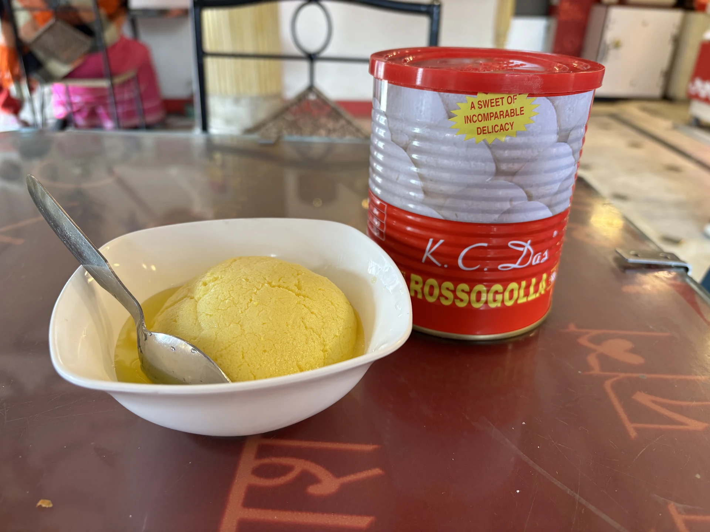
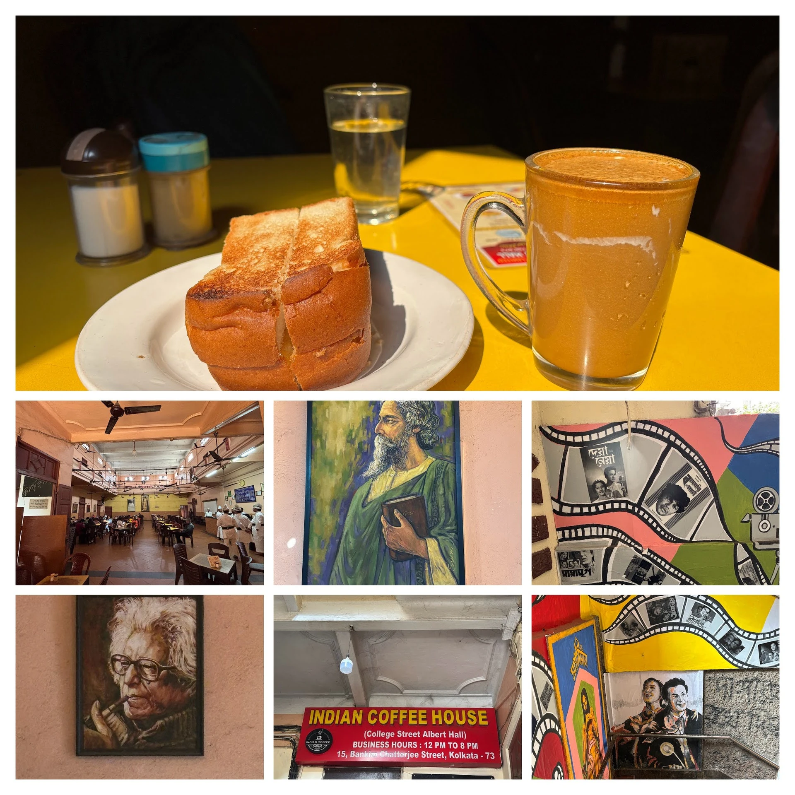
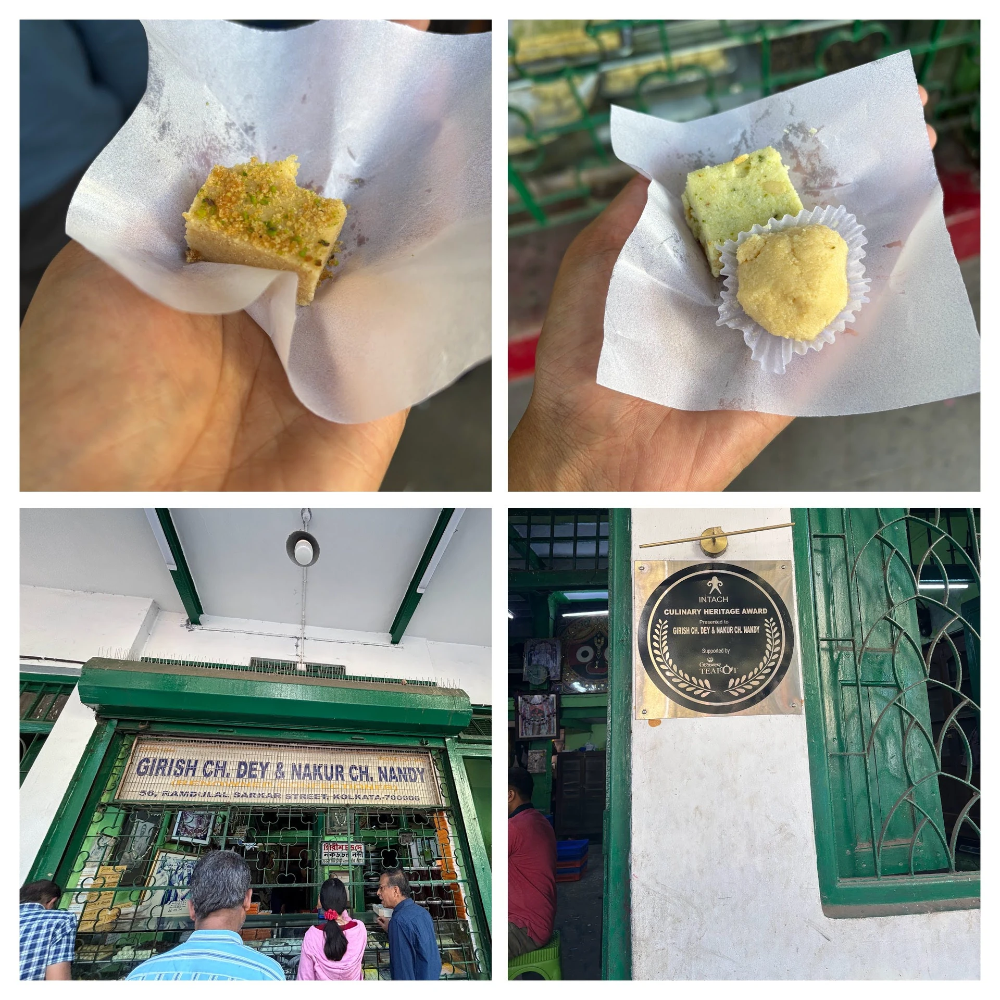
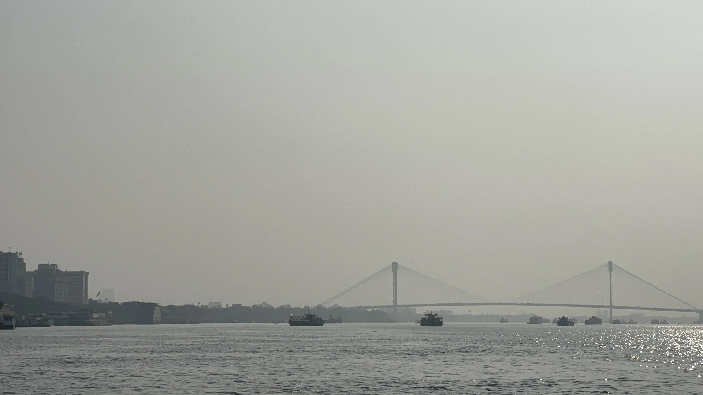
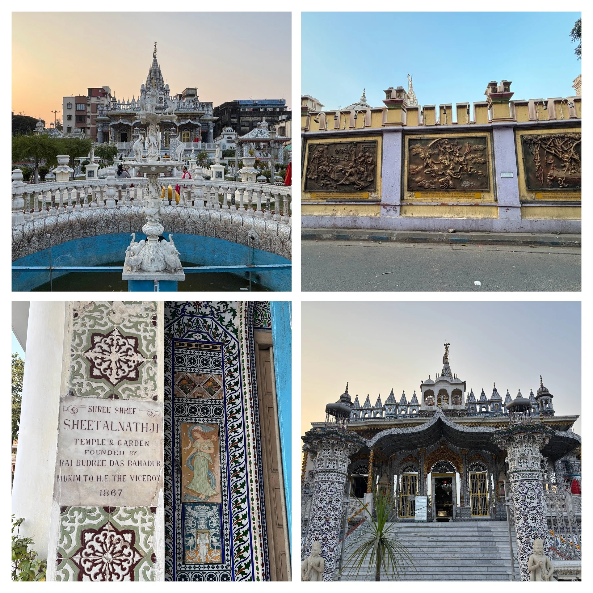

This wasn't a planned trip. I was in Kolkata on 22nd January 2026 for my US visa biometric appointment — fly in, get fingerprinted, fly out. But the biometric was done by 9:45am, my flight was at night, and Aayushi had already messaged me a list of places and sweets I had to hit. So between two airport runs I had myself a small, accidental day in Kolkata.
Solo trip. One backpack. One city to figure out before sundown. Here's how it went.
The 10-Minute Biometric & the Real Day Beginning
I'd landed the previous night at 11pm and the hotel surprised me with a free room upgrade — a small kindness after a long day. McDonald's delivery, dinner in bed, lights out.
Up at 7am. Ready by 8:15. The appointment office was a ten-minute drive away. They let me in at 9:15am for a 9:30 slot, and it was over almost before it began: passport check, photograph, fingerprints, done. Back at the hotel by 9:45am with the whole day in front of me. I checked out, dropped my bag at the concierge, opened Aayushi's list, and started walking.
KC Das: The Original Rosogolla
I was staying in the Park Street area, so KC Das was a walk away. The shop is a Kolkata landmark — the family credited (depending on who you ask) with inventing the modern spongy rosogolla. You can read the legend on the wall, but the real test is in the bite.
I started with one rosogolla standing right there at the counter. Warm syrup, cool centre, that clean cardamom-water finish you don't get anywhere else. Then I bought a canned pack for Golu back home — they vacuum-seal them so they survive a flight, which became important later.

College Street: A Book Market Bigger Than Delhi's
I tried being clever and catching a bus to Indian Coffee House. After ten minutes of standing at the wrong stop watching the wrong numbers go by, I gave up and walked to Esplanade for the metro. Got down at Mahatma Gandhi Road and stepped straight into College Street.
I've been to Daryaganj's Sunday book bazaar in Delhi. College Street is bigger. Stall after stall, deep into the lanes, textbooks stacked taller than the men selling them, second-hand novels in fading covers, Bengali periodicals tied in twine. You can spend a full day just here if you're the kind of person who buys books faster than you can read them. I was on a clock, so I let myself wander one row, photographed it, and kept walking.
Indian Coffee House: Butter Toast & Special Cold Coffee
The Indian Coffee House on College Street is the big sister of the one in Delhi — bigger hall, taller ceilings, more turbaned waiters gliding between marble-topped tables. It feels like a place where students have been arguing about politics and poetry for seventy years, because they have.
I ordered butter toast and a special cold coffee. Both are old-school perfect — the toast crisped on a flat tava with a slick of yellow butter, the coffee thick and sweet, served in a tall stainless tumbler. For me, an outsider, it was pure nostalgia for a thing I'd never actually lived. That's the trick of these places.

"Taking metro around the world is very easy. Taking a bus around India is very tough."
Girish Chandra Dey: A Sweet Shop Where You Need a Translator
Girish Chandra Dey & Nakur Chandra Nandy was a short walk from the coffee house. The display case is overwhelming — twenty kinds of sandesh, kheer kadam, nolen gur specials in winter, a dozen things I had no name for. I ate too many standing right there at the counter, then completely lost the plot trying to decide what to pack for Golu and the office.
The shopkeeper saw me staring helplessly and just took over — picked two assortments, packed them in those classic Bengali sweet boxes with the twine, told me what would survive a flight and what wouldn't. I paid, nodded, and walked out with arms full of cardboard. Best thing that happened to me all day.

Howrah Bridge & Two Jetty Rides on the Hooghly
I decided to be brave about buses again and somehow managed to catch one to Howrah. Mistake noted: the bus does eventually take you there, but Howrah on a weekday is its own kind of mayhem.
Kolkata, to me, is a mix of Delhi and Mumbai — Delhi's old-city texture, Mumbai's coastal-port energy. And Howrah is the city's Chandni Chowk. Wall-to-wall people, every inch of pavement claimed by a hawker, the bridge hanging above it all like a steel cathedral.
I took two jetty rides across the Hooghly, mostly for the breeze and the view of the bridge from the water. Worth every rupee. Try catching a bus back from Howrah though and you'll understand why I gave up and walked half a kilometre to a metro station instead.

Belgachia & the Wrong Jain Temple
Metro to Belgachia. E-rickshaw to what I'd convinced myself was the Sheeshe Wala Mandir (the famous mirror-and-glass Jain temple). It wasn't. It was a perfectly nice Jain temple — quiet, well-kept, the kind of place worth a fifteen-minute pause — but it was not the one on the postcards.
The priest there pointed me onward. Bus to Maniktala, get down one stop early — I'd been tracing the route on Google Maps and realised the earlier stop dropped me closer to the temple gate.
The Glass Temple at Maniktala (Built 1867)
This was the one. The Shantinath Jain Temple at Maniktala, built in 1867, every inch of its interior inlaid with mirror, coloured glass, and Belgian chandeliers that catch the late-afternoon light and throw it back at you in fragments. It is genuinely beautiful, and it is genuinely worth the wrong-temple detour and the bus-stop confusion to get there.

I took my pictures, sat for a few minutes in the quiet, and then realised I was running out of day.
Arsanal Veg Roll & the Cab to the Airport
I'd seen Arsanal on Google with 41,000 ratings — that kind of number in Kolkata is a signal, not a fluke. One more bus ride to get there, which turned into a small soap opera: solid traffic, then a full-volume argument between two women in the middle of the aisle that the conductor refused to referee. We all just sat with it until I finally got off.
Packed one veg roll at Arsanal — the Kolkata kathi roll, paratha around a hot vegetable filling with onion and lime — gave up on bus karma, and called a cab. Even the cab took its time in the traffic, but I made it to the airport by 8pm. I checked the bag in (the rosogolla can was the actual VIP of this trip and I wasn't letting it travel as cabin) and went looking for the lounge.
A Note on Travelling Alone
"The only demerit of travelling alone is the eating part. You don't feel like going to a restaurant alone — or maybe that's just me."
By the time I was in the lounge, I was bone-tired and not even hungry. That's the honest thing about solo travel for me — the seeing and the walking and the metro and the bus chaos, all of that was great. The eating is the part where being alone shows up. A TV or a laptop in front of me might have helped. Sitting with just a plate and your own thoughts after twelve hours of decisions is harder than it sounds.
Still — Kolkata in a day, between two flights, was a good day. The city does not need a week to make a case for itself. One walk through College Street and one ride across the Hooghly and you already know you'll be back.
Day-Trip Cheat Sheet: Kolkata Between Flights
- KC Das (Esplanade): The original spongy rosogolla. Buy a canned pack — it survives a flight.
- College Street + Indian Coffee House: Walk the book market, then go up for butter toast and cold coffee.
- Girish Chandra Dey & Nakur Chandra Nandy: Sandesh heaven. Let the shopkeeper pick for you.
- Howrah Bridge + Hooghly jetty: Cross the river by ferry for the best bridge view. Avoid the buses back.
- Shantinath Jain Temple, Maniktala (Sheeshe Wala Mandir): 1867 glass-inlay temple. Worth the detour.
- Arsanal kathi roll: Pack a veg roll for the airport. Don't underestimate Kolkata traffic — cab earlier than you think.
- Transport tip: Metro is your friend. Buses are unreliable for outsiders. Don't be a hero.
Join the conversation
Have a question, a tip, or a memory from the same place? Drop a comment below — no signup needed.